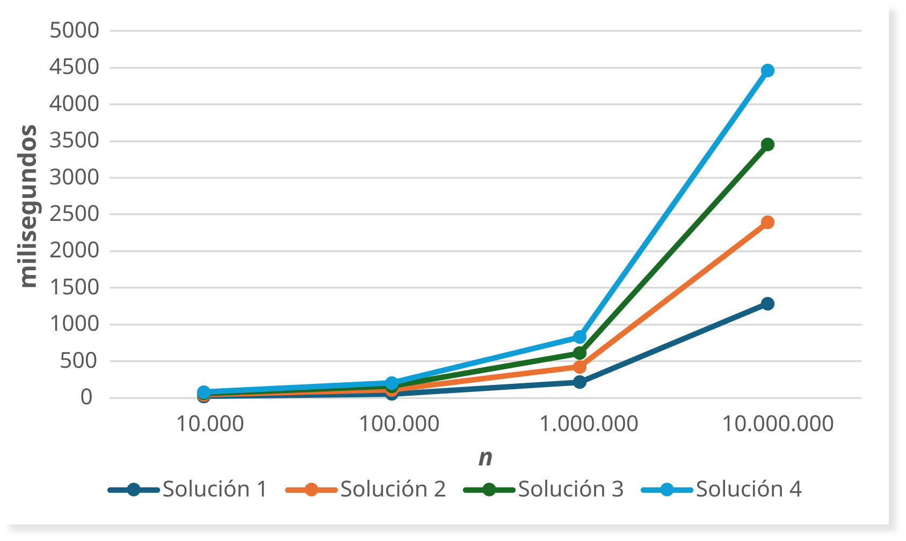

| Solución 1 | Solución 2 | Solución 3 | Solución 4 | ||
|---|---|---|---|---|---|
| 0 | 10000 | 21 | 21 | 19 | 18 |
| 1 | 100000 | 52 | 55 | 52 | 43 |
| 2 | 1000000 | 215 | 209 | 184 | 220 |
| 3 | 10000000 | 1286 | 1106 | 1060 | 1012 |
Práctica 5: Resolución de problemas en Java (II)
1 Objetivos de la práctica
Los objetivos de la quinta práctica de la asignatura son los siguientes:
- Desarrollar algoritmos en Java.
- Ejecutar algoritmos en el entorno Eclipse.
2 Criba de Eratóstenes
La criba de Eratóstenes es un algoritmo eficiente para encontrar todos los números primos menores o iguales a un número dado. El algoritmo funciona de la siguiente manera:
- Se guardan en un vector todos los números desde 2 hasta el número dado.
- Se comienza con el primer número primo (2) y se descartan todos los múltiplos de ese número.
- Se repite el proceso con el siguiente número primo en el vector hasta que se hayan procesado todos los números.
Por ejemplo, para encontrar los números primos menores o iguales a 30, el algoritmo eliminaría los múltiplos de 2 (4, 6, 8, …), luego los múltiplos de 3 (6, 9, 12, …), y así sucesivamente, dejando solo los números primos (2, 3, 5, 7, 11, 13, 17, 19, 23, 29).
3 Vectores en Java
A modo de recordatorio, un vector en Java es una estructura de datos que almacena una colección de elementos del mismo tipo. Se puede declarar e inicializar de la siguiente manera:
// Declaración e inicialización de un vector de enteros con 10 elementos
int[] vector = new int[10];
// Asignación de valores a los elementos del vector
vector[0] = 1;
vector[1] = 2;
// Acceso a los elementos del vector
int valor = vector[0]; // valor es igual a 1
// Asignación de valores utilizando un bucle
for (int i = 0; i < vector.length; i++) {
vector[i] = i + 1; // Asigna el valor i+1 a cada posición del vector
}4 Ejercicios
Ten en cuenta que la criba de Eratóstenes se puede implementar de varias maneras, dependiendo de cómo se manejen los datos y se optimice el proceso. A continuación, se presentan cuatro posibles soluciones para implementar la criba de Eratóstenes en Java. Cada solución se deberá implementar en una clase separada, de nombre Solucion1.java, Solucion2.java, Solucion3.java y Solucion4.java, respectivamente.
El objetivo es modificar cada una de las implementaciones para contar el número de “tachones” (números descartados) que realiza cada una de las implementaciones de la criba, y medir su tiempo de ejecución.
Anota el tiempo de ejecución en Microsoft Excel para cada una de las implementaciones, y cuatro valores de \(n\) diferentes: \(10^3\), \(10^4\), \(10^5\) y \(10^6\). Los valores de \(n\) se representarán en el eje \(X\) de un gráfico, y el tiempo de ejecución en el eje \(Y\). Dibuja una gráfica similar a la ilustrada a continuación:

AdvertenciaPosible falta de memoria
Ten en cuenta que para valores de \(n\) muy grandes, es posible que el programa no tenga suficiente memoria para ejecutar la criba de Eratóstenes, especialmente en las implementaciones que utilizan un vector de enteros. En ese caso, puedes intentar aumentar la memoria asignada a Java. Para ello, accede a Run > Run Configurations... en Eclipse, selecciona tu clase principal, ve a la pestaña Arguments y en el campo VM arguments añade la siguiente línea:
-Xmx4gEsto asignará un máximo de 4 GB de memoria a tu programa. Si sigues teniendo problemas de memoria, puedes intentar aumentar aún más este valor, aunque ten en cuenta que esto dependerá de la cantidad de memoria RAM disponible en tu ordenador.
4.1 Medición de tiempo de ejecución
Para medir el tiempo de ejecución de cada implementación, puedes utilizar la clase System de Java para obtener el tiempo antes y después de ejecutar el algoritmo, y luego calcular la diferencia. Aquí tienes un ejemplo de cómo hacerlo:
// Pide al usuario que introduzca el valor de n
long startTime = System.currentTimeMillis();
// Introduce la implementación de la criba de Eratóstenes aquí
long endTime = System.currentTimeMillis();
long duration = endTime - startTime;
System.out.println("Tiempo de ejecución: " + duration + " milisegundos");4.2 Solución 1: Implementación básica
En esta implementación, se utiliza un vector de números enteros para representar los números desde 0 hasta \(n\), donde cada posición indica si el número correspondiente es primo o no. Se itera a través de los números y se marcan como no primos los múltiplos de cada número primo encontrado.
Un número será primo si su posición en el vector no es cero, sino igual a su propio valor. Por ejemplo, si numero[5] es igual a 5, entonces 5 es un número primo. Si numero[6] es igual a 0, entonces 6 no es un número primo.
Formalmente, al final de la criba de Eratóstenes, cada número \(i\), donde \(2 <= i <= n\), tendrá el siguiente valor en el vector: \[ numero[i] = \begin{cases} i & \text{si } i \text{ es primo} \\ 0 & \text{si } i \text{ no es primo} \end{cases} \]
La implementación básica se puede realizar de la siguiente manera:
Scanner sc = new Scanner(System.in);
System.out.print("Introduce un numero entero: ");
int n = sc.nextInt();
int[] numero = new int[n + 1];
for (int i = 0; i <= n; i++) {
numero[i] = i;
}
int salto;
int j = 0;
for (int i = 2; i <= n; i++) {
if (numero[i] != 0) {
salto = i;
j = i + salto;
while (j <= n) {
numero[j] = 0;
j = j + salto;
}
}
}
int contadorPrimos = 0;
for (int i = 2; i <= n; i++) {
if (numero[i] != 0) {
contadorPrimos++;
System.out.println(i + " es primo");
}
}
System.out.println();
System.out.println("Total: " + contadorPrimos + " números primos");
NotaTamaño del vector
Cada entero ocupa 4 bytes en Java, por lo que el vector utilizado para la criba de Eratóstenes ocupará un total de 4 * (n + 1) bytes, donde n es el número hasta el cual se desea encontrar los números primos. Por ejemplo, si n es 100, el vector ocupará 4 * (100 + 1) = 404 bytes.
4.3 Solución 2: Optimización utilizando la raíz cuadrada de n
En la solución previa se itera hasta n para encontrar los números primos, lo cual es ineficiente. En esta solución, se optimiza el proceso iterando solo hasta la raíz cuadrada de n.
AdvertenciaOptimización con la raíz cuadrada 🧮
Lema: Si \(n ∈ ℕ+\) admite la factorización \(n = a*b\), con \(a, b ∈ ℤ\), entonces \(a ≤ \sqrt{n}\) o \(b ≤ \sqrt{n}\).
Corolario: Si \(n\) no es primo, uno de sus factores \(d\) cumple \(1 ≤ d ≤ \sqrt{n}\). Si \(n\) no tiene factores \(d\) con \(1 ≤ d ≤ \sqrt{n}\), entonces es primo. Por tanto, \(n\) es primo si y solo si es divisible por algún primo menor o igual a \(\sqrt{n}\).
La implementación de esta optimización se puede realizar de la siguiente manera:
Scanner sc = new Scanner(System.in);
System.out.print("Introduce un numero entero: ");
int n = sc.nextInt();
int[] numero = new int[n + 1];
for (int i = 0; i <= n; i++) {
numero[i] = i;
}
int salto;
int j = 0;
for (int i = 2; i * i <= n; i++) {
if (numero[i] != 0) {
salto = i;
j = i + salto;
while (j <= n) {
numero[j] = 0;
j = j + salto;
}
}
}
int contadorPrimos = 0;
for (int i = 2; i <= n; i++) {
if (numero[i] != 0) {
contadorPrimos++;
System.out.println(i + " es primo");
}
}
System.out.println();
System.out.println("Total: " + contadorPrimos + " números primos");
NotaTamaño del vector
En esta solución, el vector utilizado para la criba de Eratóstenes seguirá ocupando 4 * (n + 1) bytes, ya que se sigue utilizando un vector de enteros para representar los números desde 0 hasta n. Sin embargo, el número de iteraciones realizadas para marcar los múltiplos de cada número primo será significativamente menor, lo que puede mejorar el rendimiento del algoritmo.
4.4 Solución 3: Implementación utilizando un vector de booleanos
En esta implementación, se utiliza un vector de booleanos para representar si cada número es primo o no. El vector se inicializa con true para todos los números desde 2 hasta \(n\), y luego se marcan como false los múltiplos de cada número primo encontrado. Al final del proceso, los números que siguen siendo true en el vector son los números primos.
La implementación de esta solución se puede realizar de la siguiente manera:
Scanner sc = new Scanner(System.in);
System.out.print("Introduce un numero entero: ");
int n = sc.nextInt();
boolean[] esPrimo = new boolean[n + 1];
for (int i = 2; i <= n; i++) {
esPrimo[i] = true;
}
int salto;
int j = 0;
for (int i = 2; i * i <= n; i++) {
if (esPrimo[i]) {
salto = i;
j = i + salto;
while (j <= n) {
esPrimo[j] = false;
j = j + salto;
}
}
}
int contadorPrimos = 0;
for (int i = 2; i <= n; i++) {
if (esPrimo[i]) {
contadorPrimos++;
System.out.println(i + " es primo");
}
}
System.out.println();
System.out.println("Total: " + contadorPrimos + " números primos");
NotaTamaño del vector
En esta solución, el vector utilizado para la criba de Eratóstenes ocupará \(1 * (n + 1)\) bytes, ya que se utiliza un vector de booleanos para representar si cada número es primo o no. Cada booleano ocupa 1 byte en Java, por lo que el tamaño del vector será significativamente menor que en las soluciones anteriores que utilizaban enteros. Sin embargo, el rendimiento del algoritmo puede ser similar al de la solución anterior, ya que el número de iteraciones realizadas para marcar los múltiplos de cada número primo seguirá siendo el mismo.
Por ejemplo, si \(n\) es 100, el vector ocupará \(1 * (100 + 1) = 101\) bytes, un tamaño mucho menor que los \(404\) bytes de la solución con enteros.
4.5 Solución 4: Implementación con optimización utilizando un vector de booleanos y solo números impares
En esta implementación, se utiliza un vector de booleanos para representar si cada número impar es primo o no, ya que el único número par que es primo es el 2. De esta manera, se reduce a la mitad el tamaño del vector y se optimiza el proceso de marcado de múltiplos, ya que solo se consideran los números impares.
En resumen, los cambios introducidos en esta solución son los siguientes:
El número 2 es el único número par que es primo, por lo que podemos ignorar todos los números pares mayores que 2.
Por tanto, solo necesitamos analizar los números impares mayores que 2: \[ 3, 5, 7, 9, \ldots, n \quad (\text{o } n-1 \text{ si } n \text{ es par}) \]
Estos números pueden escribirse como
\[ p = 2i + 3 \quad \text{con } i = 0, 1, 2, \ldots, \left\lfloor \frac{n-3}{2} \right\rfloor \]Por ello, el vector solo necesita
\[ \left\lfloor \frac{n-3}{2} \right\rfloor + 1 \] posiciones (una por cada impar).Para cada primo \(p = 2i + 3\) menor que \(n\), eliminamos sus múltiplos impares menores que \(n\):
\[ 3p, 5p, 7p, \ldots \]En general, estos múltiplos pueden escribirse como
\[ (2k+1)p \quad \text{con } k = i+1, i+2, \ldots \]
La implementación de esta solución se puede realizar de la siguiente manera:
Scanner sc = new Scanner(System.in);
System.out.print("Introduce un numero entero: ");
int n = sc.nextInt();
int max = ...; // <--- calcular el tamaño del vector para solo números impares
boolean[] numero = new boolean[max + 1];
for (int i = 0; i <= max; i++) {
numero[i] = true;
}
for (int i = 0; ... <= n; i++) { // <--- iterar solo sobre números impares
int k = ...;
while (... <= n) {
numero[...] = false; // <--- marcar múltiplos impares de i como no primos
k++;
}
}
int contadorPrimos = 1;
System.out.print("2 es primo \n");
for (int i = 0; i <= ...; i++) {
if (numero[i] != false) {
contadorPrimos = contadorPrimos + 1;
System.out.println(... + " es primo");
}
}
System.out.println();
System.out.println("Total: " + contadorPrimos + " números primos");
NotaTamaño del vector
En esta solución, el vector utilizado para la criba de Eratóstenes ocupará 1 * (⌊(n-3)/2⌋ + 1) bytes, ya que se utiliza un vector de booleanos para representar si cada número impar es primo o no. Cada booleano ocupa 1 byte en Java, por lo que el tamaño del vector será significativamente menor que en las soluciones anteriores que utilizaban enteros y que consideraban tanto números pares como impares. Por ejemplo, si n es 100, el vector ocupará 1 * (⌊(100-3)/2⌋ + 1) = 49 bytes, lo que representa aproximadamente el 12% del tamaño del vector utilizado en la solución con enteros que consideraba todos los números (404 bytes).
Informática (30717) - Grado en Estudios en Arquitectura Informática (30717) - Grado en Estudios en Arquitectura Práctica 4: Aspectos avanzados de Excel Información 📌 Información general 📅 Calendario Prácticas Práctica 1: Introducción a Processing Práctica 2: Un entorno de programación en Java Práctica 3: Resolución de problemas en Java (I) Práctica 4: Aspectos avanzados de Excel Práctica 5: Resolución de problemas en Java (II) https://moodle.unizar.es/add/course/view.php?id=153600 Prácticas Práctica 5: Resolución de problemas en Java (II)
© 2026 Alfonso López, Ignacio Huitzil, Yamilka Toca
Universidad de Zaragoza
Material docente protegido.
Licencia CC BY-NC-SA 4.0 
Uso docente no comercial permitido con atribución y licencia compartida.
Práctica 5: Resolución de problemas en Java (II) – Informática (30717) - Grado en Estudios en Arquitectura Práctica 5: Resolución de problemas en Java (II) – Informática (30717) - Grado en Estudios en Arquitectura Práctica 5: Resolución de problemas en Java (II) – Informática (30717) - Grado en Estudios en Arquitectura Informática (30717) - Grado en Estudios en Arquitectura Material de prácticas del curso 2025-2026. Material de prácticas del curso 2025-2026.